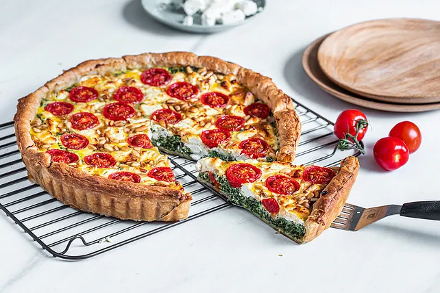

Vegetarische Rezepte
Vorspeisen
Linsensuppe
Eine herzhafte Suppe aus Gemüsebrühe, Linsen und einer Vielzahl von Gemüsesorten wie Karotten, Sellerie und Tomaten.
Veggie-Schaschlik

Vielfalt an frischem Gemüse und optional Tofu oder Seitan, die in einer würzigen Marinade eingelegt und anschließend auf Spießen gegrillt werden.
Gefüllte Champignons
Kombination aus saftigen Pilzen und würziger Füllung
Hauptspeisen
Kartoffelsalat
Ein leckeres Rezept für einen klassischen Kartoffelsalat.
Quinoa-Salat-geröstetem-Gemüse
Quinoa mit geröstetem Gemüse wie Paprika, Zucchini und Auberginen gemischt und mit einem frischen Dressing serviert.
Spinat-Feta Quiche
Eine herzhafte Quiche mit einer Füllung aus frischem Spinat, Feta-Käse und Eiern in einer knusprigen Teighülle.
Gemüse-Risotto
Ein cremiges Risotto aus Arborio-Reis, gekocht mit Gemüsebrühe und gemischt mit einer Vielzahl von saisonalem Gemüse wie Pilzen, Spargel und Erbsen.
Vegetarische Pizza

Eine Pizza mit einer Auswahl an Gemüsezutaten wie Paprika, Zwiebeln, Pilzen, Oliven und Artischockenherzen, belegt mit Käse und Tomatensoße.
Vegetarische Burger
Burger-Patties aus pürierten Süßkartoffeln und schwarzen Bohnen, gewürzt und gebraten, serviert auf einem Burgerbrötchen mit Salat und Sauce nach Wahl.
Vegetarische-Tacos
Weiche Tortillas gefüllt mit gewürzten Kichererbsen, frischem Gemüse, Guacamole und Salsa.
Gemüse-Curry-Pfanne

Ein würziges Curry aus verschiedenen Gemüsesorten wie Kartoffeln, Karotten, Erbsen und Blumenkohl, gekocht in einer cremigen Kokosmilchsoße.
Desserts
Spaghetti-Eis Dessert
Eisdessert-Kreation, die optisch an einen Teller Spaghetti mit Tomatensauce und Parmesan erinnert.
Kaiserschmarrn - Tiroler Landgasthofrezept
zerrissenen Pfannkuchen, der typischerweise mit Puderzucker bestreut und mit Apfelmus oder Zwetschgenröster serviert wird
Amerikanische Pancakes
fluffige, dicke Pfannkuchen mit Ahornsirup und Beeren